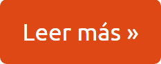

¿Qué es Harkness Institute? |
Testimonios
"Una gran escuela diferente."
- Alexander Schiller |
Harkness Institute es una preparatoria bilingüe y bicultural con un enfoque educativo que hace
énfasis en el aprendizaje de alumno a alumno; deja de lado el método tradicional donde el maestro
—“el sabelotodo” en escena— expone los temas.
El Instituto Harkness, incorporado a la SEP, prepara rigurosamente a los estudiantes más motivados
y brillantes de la región, para proyectar su entrada a universidades de talla internacional. Harkness ofrece
a sus estudiantes una educación sin paralelo en México.
|
|
 Nuestro método de mesa colaborativa fomenta el aprendizaje
profundo a través de la discusión, permitiendo que cada estudiante
participe activamente y desarrolle habilidades de pensamiento crítico.
Nos enfocamos en cada uno de nuestros alumnos, creando un ambiente
donde puedan maximizar su potencial intelectual y personal.

|
"Harkness para mi ha sido una oportunidad para pensar de forma diferente al escuchar la opinión de otros mientras discutimos. Me ha ayudado a compartir mi opinión frente a otros y ser escuchada y entendida."
- Ananda Albarrán |
¿Porqué escoger Harkness?
|
"Me cambió demasiado la vida, y a pesar de que mis expectativas estaban un tanto altas, la escuela logró sorprenderme con sus actividades, sus dinámicas y su ambiente escolar."
-Julen Zaldo |

.png)